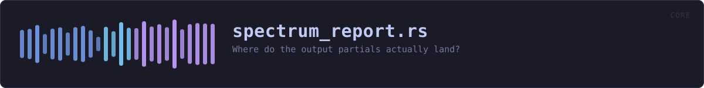

crates/veilvoice-core/examples/spectrum_report.rs
veilvoice-core · 99 lines · read the source
Where do the output partials actually land?
Prints the strongest partials of a synthetic speaker before and after processing, as multiples of the STFT bin grid. It is the quickest way to see the two synthesis modes described in spectral.rs:
- accent off — the legacy channel-vocoder path. Each harmonic smears into a cluster of neighbouring grid frequencies (187.5 and 234.4 Hz around one partial), which is what makes it sound metallic.
- accent on — an exact harmonic series at the canonical register (140.6 Hz and its multiples), whatever pitch went in.
Run with cargo run -p veilvoice-core --example diag_spectrum.
WHAT CALLS WHAT
The functions this file defines, and the calls between them. An edge means the callee's name appears, called, inside the caller's body — a syntactic reading, not a type-resolved one.
The same graph as Mermaid source
%%{init: {"theme":"base","themeVariables":{"background":"#1a1b26","primaryColor":"#1f2335","primaryTextColor":"#c0caf5","primaryBorderColor":"#7aa2f7","secondaryColor":"#16161e","tertiaryColor":"#16161e","lineColor":"#737aa2","textColor":"#c0caf5","mainBkg":"#1f2335","nodeBorder":"#7aa2f7","clusterBkg":"#16161e","clusterBorder":"#2f3549","fontFamily":"ui-monospace, SFMono-Regular, Consolas, monospace","fontSize":"14px"}}}%%
flowchart TD
n_speaker["speaker"]
n_peaks["peaks"]
n_main["main"]
n_main --> n_peaks
n_main --> n_speakerThis site loads no third-party script, so it cannot run Mermaid; the diagram above is the same nodes and edges drawn by the generator instead. GitHub renders the source below directly.
ITEMS
| Item | Line | Documentation |
|---|---|---|
speaker fn | 19 | |
peaks fn | 41 | |
main fn | 71 |